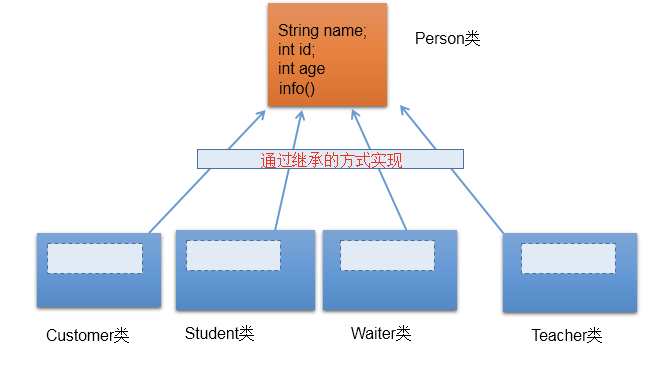
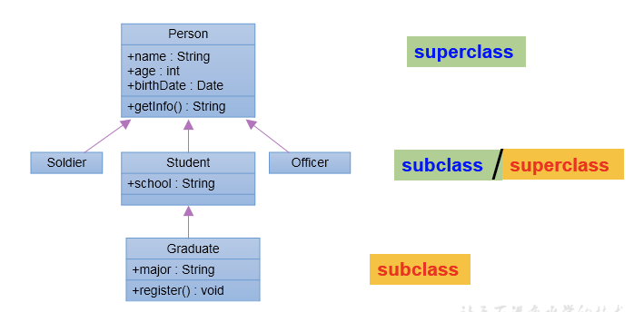
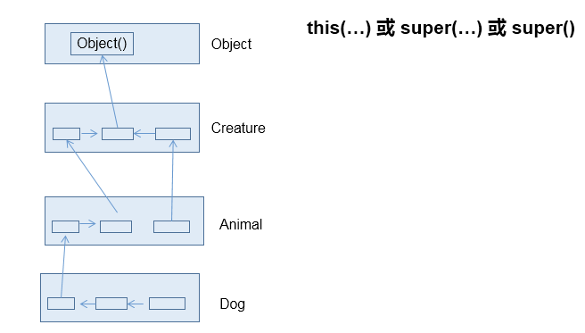
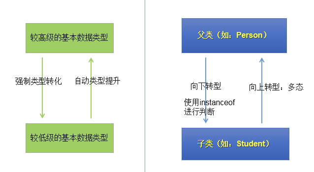
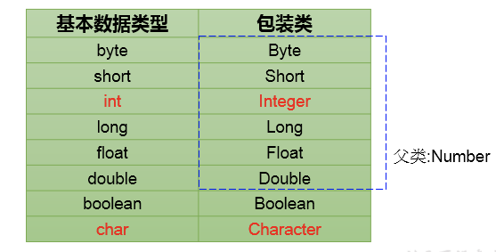
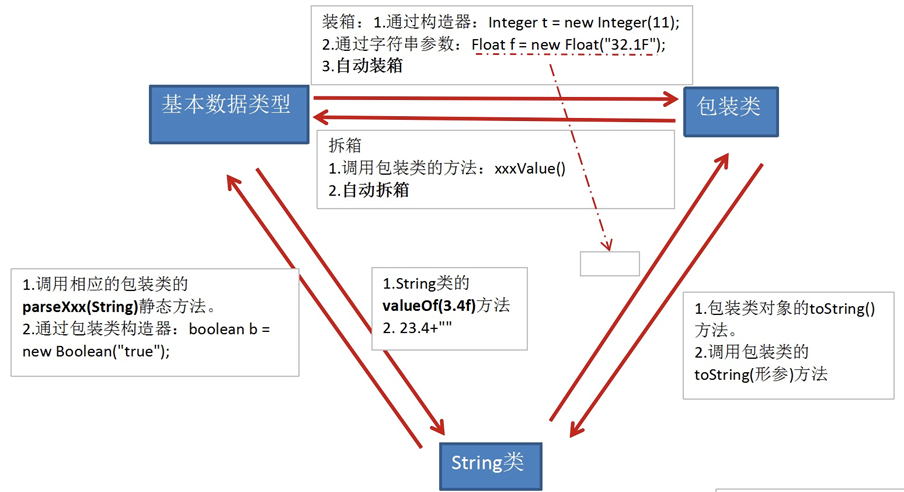

1 面向对象的特征二：继承性
1.1 继承性的优点
- 减少了代码的冗余，提高了代码的复用性
- 便于功能的扩展
- 为之后多态性的使用，提供了前提

1.2 Java继承的格式和说明
class A extends B{}
- A：子类、派生类、subclass
- B：父类、超类、基类、superclass
子类继承父类后：
- 体现：一旦子类A继承父类B以后，子类A中就获取了父类B中声明的所有的属性和方法。
- 特别的，父类中声明为private的属性或方法，子类继承父类以后，仍然认为获取了父类中私有的结构。只因为封装性的影响，使得子类不能直接调用父类的结构而已。
- 子类继承父类以后，还可以声明自己特有的属性或方法：实现功能的拓展。
- 子类和父类的关系，不同于子集和集合的关系。
- extends：延展、扩展。
继承性的说明：
- 一个类可以被多个子类继承。
- Java中类的单继承性：一个类只能有一个父类。
- 子父类是相对的概念。
- 子类直接继承的父类，称为：直接父类。间接继承的父类称为：间接父类。
- 子类继承父类以后，就获取了直接父类以及所有间接父类中声明的属性和方法。

1.3 java.lang.Object类的理解
- 如果我们没显式的声明一个类的父类的话，则此类继承于java.lang.Object类
- 所有的java类（除java.lang.Object类之外）都直接或间接的继承于java.lang.Object类
- 意味着，所的java类具有java.lang.Object类声明的功能。
2 方法的重写
2.1 override的应用
子类继承父类以后，可以对父类中同名同参数的方法，进行覆盖操作。
重写以后，当创建子类对象以后，通过子类对象调用子父类中的同名同参数的方法时，实际执行的是子类重写父类的方法。
class Circle{
public double findArea(){}//求面积
}
class Cylinder extends Circle{
public double findArea(){}//求表面积
}
***************
class Account{
public boolean withdraw(double amt){}
}
class CheckAccount extends Account{
public boolean withdraw(double amt){}
}2.2 重写的规则
方法的声明：
权限修饰符 返回值类型 方法名(形参列表) throws 异常的类型{
//方法体
}约定俗称：子类中的叫重写的方法，父类中的叫被重写的方法
- 子类重写的方法的方法名和形参列表与父类被重写的方法的方法名和形参列表相同
- 子类重写的方法的权限修饰符不小于父类被重写的方法的权限修饰符
- 特殊情况：子类不能重写父类中声明为private权限的方法
- 返回值类型：
- 父类被重写的方法的返回值类型是void，则子类重写的方法的返回值类型只能是void
- 父类被重写的方法的返回值类型是A类型，则子类重写的方法的返回值类型可以是A类或A类的子类
- 父类被重写的方法的返回值类型是基本数据类型(比如：double)，则子类重写的方法的返回值类型必须是相同的基本数据类型(必须也是double)
- 子类重写的方法抛出的异常类型不大于父类被重写的方法抛出的异常类型（具体放到异常处理时候讲）
子类和父类中的同名同参数的方法要么都声明为非static的——考虑重写，要么都声明为static的——不是重写。
2.3 面试题：区分方法的重写与重载
首先，二者的概念。
其次，重载和重写的具体规则。
最后，重载：不表现为多态性。重写：表现为多态性。
重载，是指允许存在多个同名方法，而这些方法的参数不同。编译器根据方法不同的参数表，对同名方法的名称做修饰。对于编译器而言，这些同名方法就成了不同的方法。它们的调用地址在编译期就绑定了。Java的重载是可以包括父类和子类的，即子类可以重载父类的同名不同参数的方法。
所以：对于重载而言，在方法调用之前，编译器就已经确定了所要调用的方法，这称为“早绑定”或“静态绑定”；而对于多态，只等到方法调用的那一刻，解释运行器才会确定所要调用的具体方法，这称为“晚绑定”或“动态绑定”。
引用一句Bruce Eckel的话：“不要犯傻，如果它不是晚绑定，它就不是多态。”
3 关键字：super
3.1 super关键字的理解
super关键字可以理解为：父类的。
可以用来调用的结构：属性、方法、构造器。
3.2 super调用属性、方法
我们可以在子类的方法或构造器中。通过使用super.属性或super.方法的方式，显式的调用父类中声明的属性或方法。但是，通常情况下，我们习惯省略”super”。
特殊情况1：当子类和父类中定义了同名的属性时，我们要想在子类中调用父类中声明的属性，则必须显式的使用super.属性的方式，表明调用的是父类中声明的属性。
特殊情况2：当子类重写了父类中的方法以后，我们想在子类的方法中调用父类中被重写的方法时，则必须显式的使用super.方法的方式，表明调用的是父类中被重写的方法。
3.3 super调用构造器
我们可以在子类的构造器中显式的使用super(形参列表)的方式，调用父类中声明的指定的构造器。
"super(形参列表)的使用，必须声明在子类构造器的首行！- 在类的构造器中，针对于
this(形参列表)或super(形参列表)只能二选一，不能同时出现。 - 在构造器的首行，没显式的声明
this(形参列表)或super(形参列表)，则默认调用的是父类中空参的构造器super()。 - 因此，在类的多个构造器中，至少一个类的构造器中使用了
super(形参列表)，调用父类中的构造器。
3.4 子类对象实例化的全过程
从结果上看：继承性
- 子类继承父类以后，就获取了父类中声明的属性或方法。
- 创建子类的对象，在堆空间中，就会加载所父类中声明的属性。
从过程上看：
- 当我们通过子类的构造器创建子类对象时，我们一定会直接或间接的调用其父类的构造器，进而调用父类的父类的构造器，直到调用了java.lang.Object类中空参的构造器为止。
- 正因为加载过所有的父类的构造器，所以才可以看到内存中父类中的结构，子类对象才可以考虑进行调用。

强调说明：虽然创建子类对象时，调用了父类的构造器，但是自始至终就创建过一个对象，即为new的子类对象。
4 面向对象的特征三：多态性
4.1 多态性的理解
多态性可以理解为一个事物的多种形态。
对象的多态性：父类的引用指向子类的对象（或子类的对象赋给父类的引用）。
Person p = new Man();
Object obj = new Date();4.2 多态性的使用
多态性的使用前提：
- 类的继承关系
- 方法的重写
虚拟方法调用：
- 有了对象的多态性以后，我们在编译期，只能调用父类中声明的方法，但在运行期，我们实际执行的是子类重写父类的方法。
- 总结：编译，看左边；运行，看右边。
// 举例一：
public void func(Animal animal){//Animal animal = new Dog();
animal.eat();
animal.shout();
}
// 举例二：
public void method(Object obj){
}
// 举例三：
class Driver{
public void doData(Connection conn){//conn = new MySQlConnection(); / conn = new OracleConnection();
//规范的步骤去操作数据
// conn.method1();
// conn.method2();
// conn.method3();
}多态性使用的注意点：对象的多态性，只适用于方法，不适用于属性（属性编译和运行都看左边）。
4.3 关于向上转型与向下转型
向上转型：多态。子类的对象本身就可以被父类的引用所指向，不需要显式转型。
向下转型：有了对象的多态性以后，内存中实际上是加载了子类特有的属性和方法的，但是由于变量声明为父类类型，导致编译时，只能调用父类中声明的属性和方法。子类特有的属性和方法不能调用。如何才能调用子类特有的属性和方法？使用向下转型。
向下转型的实现：使用强制类型转换符()。
注意：
- 使用强转时，可能出现ClassCastException的异常。
- 为了避免在向下转型时出现ClassCastException的异常，我们在向下转型之前，先进行instanceof的判断，一旦返回true，就进行向下转型。如果返回false，不进行向下转型。
4.4 instanceof的使用
- a instanceof A：判断对象a是否是类A的实例。如果是，返回true；如果不是，返回false。
- 如果 a instanceof A返回true，则 a instanceof B也返回true。其中，类B是类A的父类。
- 要求a所属的类与类A必须是子类和父类的关系，否则编译错误。

4.5 面试题
谈谈对多态性的理解：
- 实现代码的通用性。
- Object类中定义的
public boolean equals(Object obj){ }；JDBC使用java程序操作(获取数据库连接、CRUD)数据库(MySQL、Oracle、DB2、SQL Server)。 - 抽象类、接口的使用肯定体现了多态性。（抽象类、接口不能实例化）
多态是编译时行为还是运行时行为？
- 运行时。
5 Object类的使用
5.1 java.lang.Object类的说明
- Object类是所有Java类的根父类。
- 如果在类的声明中未使用extends关键字指明其父类，则默认父类为java.lang.Object类 。
- Object类中的功能(属性、方法)就具通用性。
- Object类只声明了一个空参的构造器。
属性：无
方法：equals() / toString() / getClass() /hashCode() / clone() / finalize()；wait() 、 notify()、notifyAll()
5.2 equals()方法
equals()的使用：
- 是一个方法，而非运算符。
- 只能适用于引用数据类型。
- Object类中equals()的定义：
public boolean equals(Object obj) {
return (this == obj);
}说明：Object类中定义的equals()和==的作用是相同的，即比较两个对象的地址值是否相同，即两个引用是否指向同一个对象实体。
- 像String、Date、File、包装类等都重写了Object类中的equals()方法。重写以后，比较的不是两个引用的地址是否相同，而是比较两个对象的”实体内容”是否相同。
- 通常情况下，我们自定义的类如果使用equals()的话，也通常是比较两个对象的”实体内容”是否相同。那么，我们就需要对Object类中的equals()进行重写。重写的原则也是比较两个对象的实体内容是否相同。
- equals()方法可以手动写，但开发中一般使用IDE自动生成。
5.3 回顾==运算符的使用：
- 可以使用在基本数据类型变量和引用数据类型变量中
- 如果比较的是基本数据类型变量：比较两个变量保存的数据是否相等。（不一定类型要相同）
- 如果比较的是引用数据类型变量：比较两个对象的地址值是否相同，即两个引用是否指向同一个对象实体。
- 使用时，必须保证符号左右两边的变量类型一致，即要么都是基本数据类型，要么都是引用数据类型。
5.4 toString()方法
- 当我们输出一个对象的引用时，实际上就是调用当前对象的
toString()。 - Object类中toString()的定义：
public String toString() {
return getClass().getName() + "@" + Integer.toHexString(hashCode());
}- 像String、Date、File、包装类等都重写了Object类中的toString()方法。使得在调用对象的toString()时，返回”实体内容”信息。
- 自定义类也可以重写toString()方法，当调用此方法时，返回对象的”实体内容”。
- toString()方法可以手动写，但开发中一般使用IDE自动生成。
6 包装类的使用
为了使基本数据类型的变量具有类的特征，引入包装类。
6.1 基本数据类型与对应的包装类

6.2 类型之间的转换（基本数据类型，包装类，String）

- 基本数据类型<—>包装类：JDK 5.0 新特性：自动装箱 与自动拆箱
- 基本数据类型、包装类—>String：调用String重载的valueOf(Xxx xxx)
- String—>基本数据类型、包装类：调用包装类的parseXxx(String s)
- 注意：转换时，可能会报NumberFormatException
应用场景举例：Vector类中关于添加元素，只定义了形参为Object类型的方法。
- v.addElement(Object obj); //基本数据类型 —>包装类 —>使用多态
最后更新： 2021年08月25日 08:50